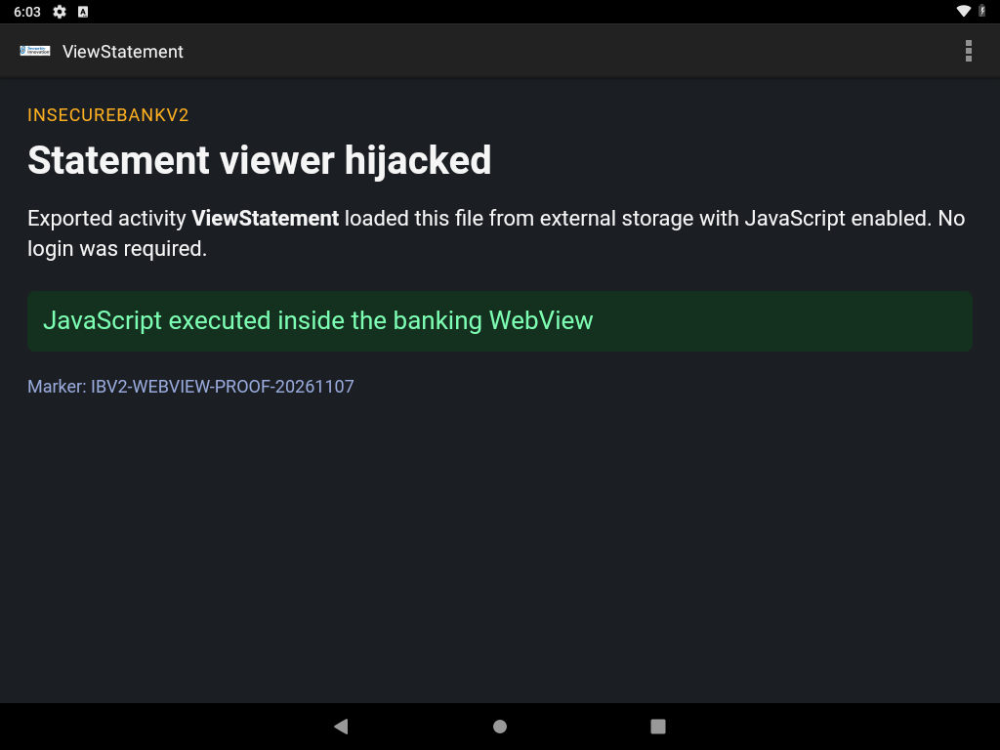

Description
The assessment report marked a Critical WebView JavaScript bridge because the DEX file contains the string addJavascriptInterface. That string sits in the DEX string pool next to other Android API names (addFlags, addFragment, addHeader). The app's own ViewStatement does not call addJavascriptInterface, and there is no @JavascriptInterface method. On API 28 that call would not have been remote code execution anyway.
What the activity actually does is still exploitable. It is exported. It reads the uname string extra and, if the file exists, loads:
file:///storage/emulated/0/Statements_<uname>.htmlwith JavaScript enabled. Any caller who can write that file on shared external storage (the app holds WRITE_EXTERNAL_STORAGE, granted at install because targetSdkVersion is 22) can open the banking UI and run script in it without logging in.
The page used for this test starts with the text "JavaScript did not run". The script replaces that text. The screenshot shows the replacement, so the script ran inside the app's WebView.
Steps performed
- Confirmed
ViewStatementisandroid:exported="true"and has no permission in the manifest. - Wrote an HTML proof file whose script changes its own status line.
- Pushed it to
/sdcard/Statements_labproof.html. - Woke the device and started the activity directly:
adb shell am start -n com.android.insecurebankv2/.ViewStatement --es uname labproof - Logcat printed the path the activity checked:
/storage/emulated/0/Statements_labproof.html. - Captured the screen.
No login screen was shown. The activity title was ViewStatement.
Evidence

On-screen text
- Title:
ViewStatement Statement viewer hijackedJavaScript executed inside the banking WebViewMarker: IBV2-WEBVIEW-PROOF-20261107
Impact
Anyone who can start an activity on the device and write a file under external storage can present arbitrary content inside the banking app, with JavaScript running. That is a trusted-UI spoof and a local script-execution bug. It skips the login screen.
It is not native code execution. The WebView was not given a Java object, and the app does not turn on setAllowUniversalAccessFromFileURLs. A script in this page cannot read other files or call into the app's Java methods.
Errors and fixes
Scanner mismatch. The Critical finding's evidence was the string addJavascriptInterface. Source review of ViewStatement.java shows loadUrl, setJavaScriptEnabled(true), and a WebViewClient that loads every URL. It does not register a JavaScript interface. The exploit above is the bug that is actually present. Severity is reported as High for that confirmed behavior.
No other error. The activity loaded the file on the first attempt. READ_EXTERNAL_STORAGE is declared with maxSdkVersion="18", but WRITE_EXTERNAL_STORAGE is granted at install on this targetSdk 22 app, and the WebView was able to read /sdcard/Statements_labproof.html.